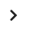

PMP Links can be created from either a Network Device or from the map view.
To create a new PMP Link to a Subscriber Site from a Network Device, click from the Links to Subscriber Modules table and the Attach Subscribers page is displayed.
This page shows the list of available Subscriber Sites within the coverage area of the Network Device. Select one or more Subscriber Sites and hit OK. The filter field narrows the choice when there is a large number of Subscriber Sites in the list.
To create a new PMP Link from the map to a Network Device, click . This displays the PMP Link Mode menu.
To use the subscriber site height for the Subscriber Module, tick the Use the site Maximum Height? box. To use a different height ensure the Use the site Maximum Height? box is not ticked and enter the required height. To create a link from an existing Subscriber Site click on the Subscriber Site in the map. To create both a new link and Subscriber Site click within the coverage area of a Network Device.
If the site is covered by more than one Network Device the link is created to the Network Device which gives the strongest receive level at the Subscriber Site.
Multiple links are created by continuing to click on the map, to stop creating PMP Links select Esc or click again on or click on .
In all cases the selection options only include Subscriber Sites where the Subscriber Site is within the SM Range defined for the Network Device. The list is further constrained by the sector coverage and Azimuth bearing of the Network Device antenna. Use the Network Device Modeled Beamwidth value to set the sector coverage of the antenna.
The Subscriber Modules are then created and listed under the Network Devices in the PMP menu. Click  of the Network Device under the PMP menu in the left hand tool bar. To change to the table view, click on the PMP menu in the left hand tool bar and then select the PMP Links tab. To manage the table view see User Interface Tips.
To locate the PMP links in the map view from the PMP Links details page, click the icon, which is displayed next to the icon at the top.
To delete a Subscriber Module, hover over the Subscriber Module in the PMP tree view and click , click on the details page, select rows and click in the table view, or right-click on the PMP Link in the map view and select Delete from the pop-up menu.
To revert the changes made, click the icon in the details page, which is displayed next to the Apply button. This icon is only displayed when there are changes to the parameters, replacing the icon.

 icon in the details page, which is displayed next to the Apply button. This icon is only displayed when there are changes to the parameters, replacing the icon.
icon in the details page, which is displayed next to the Apply button. This icon is only displayed when there are changes to the parameters, replacing the icon.